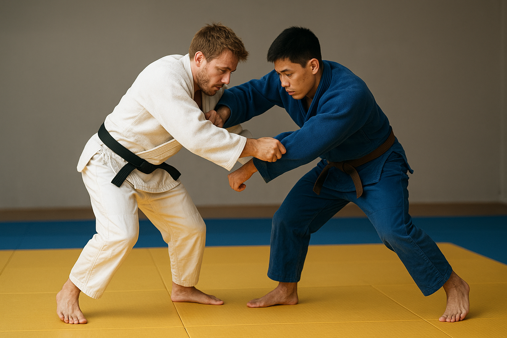

Judo wurde Ende des 19. Jahrhunderts in Japan entwickelt und ist heute eine der bekanntesten Kampfsportarten weltweit. Erfunden wurde es 1882 von Jigoro Kano, einem Lehrer und Sportler, der eine neue Art von Kampfkunst schaffen wollte. Sein Ziel war es, einen Sport zu entwickeln, der nicht nur den Körper trainiert, sondern auch den Geist stärkt und Werte wie Respekt, Disziplin und Fairness vermittelt.
Kano studierte verschiedene traditionelle japanische Kampfkünste und wählte aus ihnen die besten Techniken aus. Dabei war ihm besonders wichtig, dass die Techniken sicher und systematisch trainierbar sind. Er kombinierte diese Techniken zu einem neuen Sport, den er „Judo“ nannte. Das Wort „Judo“ bedeutet so viel wie „der sanfte Weg“. Es zeigt, dass es nicht um rohe Gewalt geht, sondern darum, die eigene Kraft klug und effizient einzusetzen.

Von Anfang an legte Kano großen Wert auf pädagogische Ziele. Er wollte, dass seine Schüler nicht nur körperlich fit werden, sondern auch lernen, Verantwortung zu übernehmen, Geduld zu haben und sich gegenseitig zu respektieren. Deshalb trainieren Judoka immer zu zweit oder in Gruppen und lernen, miteinander zu arbeiten, statt gegeneinander zu kämpfen.
Judo verbreitete sich schnell in Japan. Schulen und Universitäten nahmen den Sport auf, und immer mehr Menschen begannen, ihn zu trainieren. Anfang des 20. Jahrhunderts gelangte Judo auch nach Europa und Amerika. Dort wurde es zunächst vor allem in Städten und an Schulen bekannt. Heute wird Judo in über 200 Ländern weltweit ausgeübt.
Ein großer Meilenstein in der Geschichte des Judo war die Aufnahme in die Olympischen Spiele 1964 in Tokio. Seitdem ist Judo eine weltweit anerkannte Wettkampfsportart. Neben dem Sport gibt es viele internationale Wettbewerbe, Turniere und Meisterschaften, bei denen Judoka ihr Können zeigen können.
Judo hat sich über die Jahre weiterentwickelt, bleibt aber seinen Grundprinzipien treu: Technik statt Kraft, Respekt gegenüber anderen und die Förderung von Körper und Geist. Wer die Geschichte des Judo kennt, versteht, dass dieser Sport weit mehr ist als nur ein körperliches Training. Judo ist eine Lebensphilosophie, die Menschen dazu motiviert, sich selbst zu verbessern, fair zu handeln und Verantwortung zu übernehmen – sowohl im Sport als auch im Alltag.